voice samples
Carregando amostras
Os players de voz aparecem aqui assim que o report é encontrado.
As imagens abaixo são geradas pelo próprio app. A primeira seção compara presets visuais com a mesma cena-base. A segunda compara modelos de imagem usando o mesmo prompt do caso do GPS.
Amostras reais com o mesmo texto de stress: 5 vozes Gemini e 5 vozes ElevenLabs. A ideia aqui é comparar timbre, dicção em pt-BR e como cada voz lida com palavras em inglês no ritmo curto do canal.
Carregando texto de teste...
voice samples
Os players de voz aparecem aqui assim que o report é encontrado.
Cena-base: Create a single strong frame for a short-form tech video. A person is about to clean a smartphone screen with toothpaste on a desk in a modern home office. The phone, the toothpaste smear, and the hand must be clearly visible. One main subject, no text, no logos, no watermark, mobile-first readability, high clarity, dramatic but believable proof visual.
Modelo usado para os presets: gemini-2.5-flash-image
claude
Visual claro, flat, fundo branco e linguagem corporate memphis com stick figures legíveis.
Abrir imagem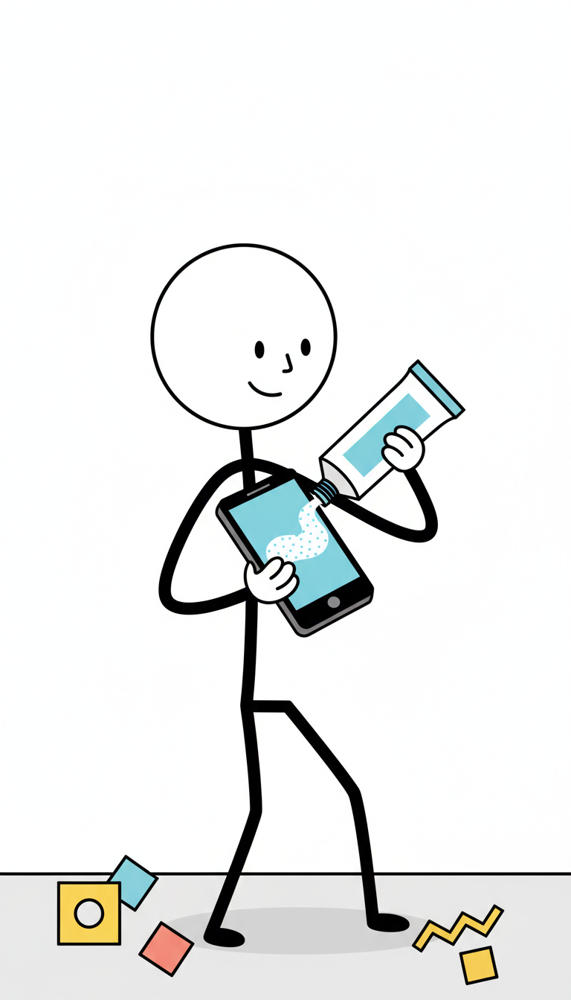
Create a single strong frame for a short-form tech video. A person is about to clean a smartphone screen with toothpaste on a desk in a modern home office. The phone, the toothpaste smear, and the hand must be clearly visible. One main subject, no text, no logos, no watermark, mobile-first readability, high clarity, dramatic but believable proof visual. Style preset: Video estilo Claude. Every shot must read immediately as a clean stick figure explainer: large round head, thin black limbs, flat accents, white background, and one idea per frame. single stick figure character when needed, large round head, thin black limbs, minimal face, clean posture, clear silhouette, expressive body language flat stick figure editorial illustration, clean black outlines, white background, corporate memphis color accents, simple geometric props, high clarity, immediate explainer readability, no text, no logos consistent visual identity across all scenes, same stick figure design, same thin black line weight, same white-background treatment, same memphis accent palette, same explainer composition logic one clear focal character performing one literal action, readable silhouette, simple supporting props, clean layout, no text clean white or very light neutral background with generous open space supporting objects should stay simple as flat geometric props or small pictograms background detail should stay secondary so the action reads instantly on mobile Lighting: clean high-contrast lighting on a white background. Keep the same scene intent across styles so only the visual language changes.
kiro
Visual cinematografico, fundo escuro, contraste forte e paleta mais dramatica.
Abrir imagem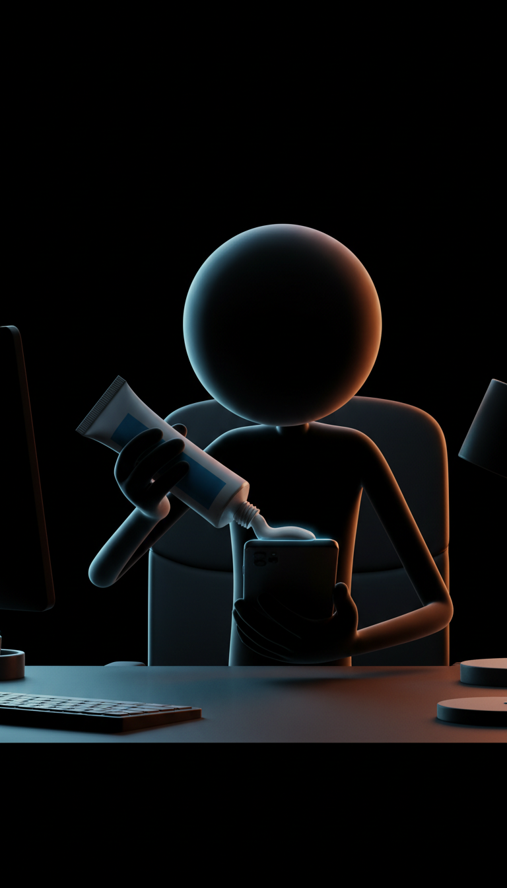
Create a single strong frame for a short-form tech video. A person is about to clean a smartphone screen with toothpaste on a desk in a modern home office. The phone, the toothpaste smear, and the hand must be clearly visible. One main subject, no text, no logos, no watermark, mobile-first readability, high clarity, dramatic but believable proof visual. Style preset: Video estilo Kiro. Every shot must read as a dark cinematic stick figure frame with one focal subject, strong silhouette separation, controlled color accents, and immediate mobile readability. single stick figure character when needed, large round head, thin black limbs, minimal face, expressive posture, clean silhouette, built for dark cinematic scenes dark cinematic stick figure illustration, controlled vivid accents, strong contrast, moody atmosphere, readable silhouette, polished editorial framing, no text, no logos consistent visual identity across all scenes, same stick figure design, same dark cinematic treatment, same controlled accent palette, same dramatic rim separation, same polished composition logic one clear focal character, one literal action, deep contrast, readable silhouette, atmospheric but restrained environment, no text dark cinematic background with strong subject separation and restrained color accents environment detail should support the action without swallowing the character silhouette surfaces and props should feel moody, clean, and premium rather than noisy Lighting: controlled cinematic lighting with strong subject separation on a dark background. Keep the same scene intent across styles so only the visual language changes.
editorial_clean
Ilustração editorial limpa, humana e clara, com foco em objetos, prova visual e leitura rápida.
Abrir imagem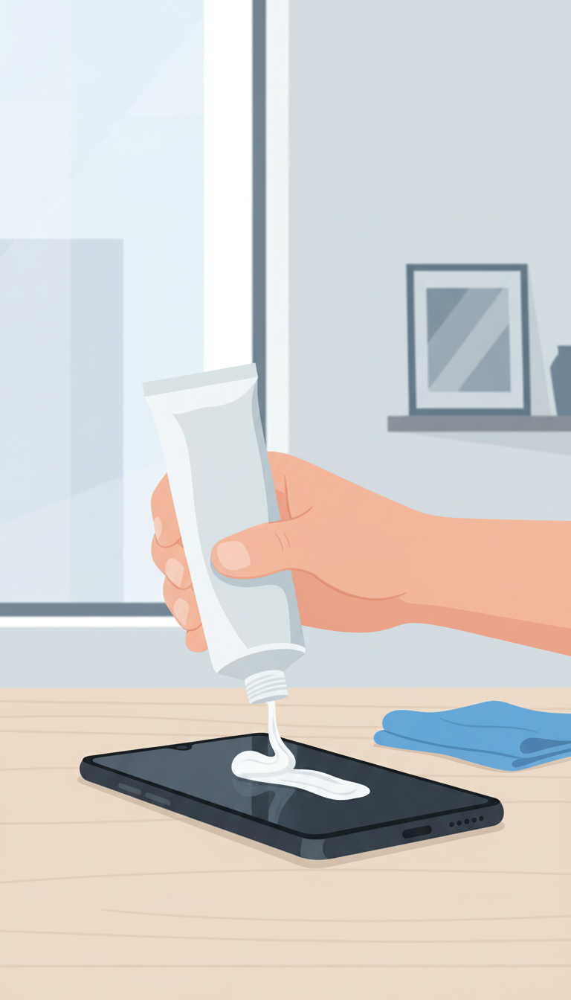
Create a single strong frame for a short-form tech video. A person is about to clean a smartphone screen with toothpaste on a desk in a modern home office. The phone, the toothpaste smear, and the hand must be clearly visible. One main subject, no text, no logos, no watermark, mobile-first readability, high clarity, dramatic but believable proof visual. Style preset: Editorial Clean. Every shot must read as a clean editorial explainer frame with one proof visual, one clear action, restrained color, and immediate mobile readability. single simplified editorial human when needed, clean human proportions, readable posture, clear silhouette, minimal facial detail, modern illustrated presence clean editorial illustration, modern explainer art, crisp shapes, restrained palette, light neutral background, subtle depth, high clarity, no text, no logos consistent visual identity across all scenes, same editorial illustration language, same clean shape treatment, same restrained palette, same object hierarchy, same polished explainer composition one clear focal subject, one proof visual per scene, readable objects, clean posture, one main action, no symbolic clutter, no text light neutral or off-white background with minimal environmental shapes clear object hierarchy with one or two supporting props only background detail should stay soft and secondary to the proof visual Lighting: clean studio-style lighting on a light neutral background. Keep the same scene intent across styles so only the visual language changes.
realistic_film
Frames com cara de cinema realista, luz natural, profundidade e cenas mais humanas.
Abrir imagem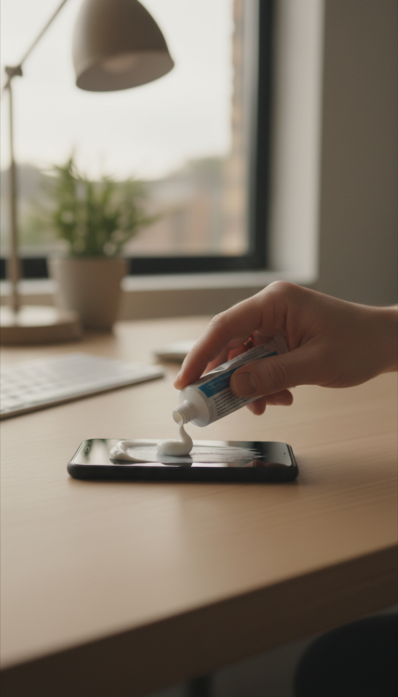
Create a single strong frame for a short-form tech video. A person is about to clean a smartphone screen with toothpaste on a desk in a modern home office. The phone, the toothpaste smear, and the hand must be clearly visible. One main subject, no text, no logos, no watermark, mobile-first readability, high clarity, dramatic but believable proof visual. Style preset: Realistic Film. Every shot must read as a cinematic realistic film still with believable locations, natural behavior, strong object realism, and premium subject separation. single realistic human subject when needed, natural proportions, grounded body language, readable pose, believable presence, clean anatomy cinematic realistic film still, natural light, documentary realism, subtle color grading, real-world textures, shallow depth of field, polished but grounded composition, non-fantasy, no text, no logos, no watermark consistent visual identity across all scenes, same filmic realism, same natural-light treatment, same grounded lens language, same restrained grade, same premium cinematic composition one strong focal subject, one real-world action or proof visual per frame, believable environment, no surreal clutter, no text realistic environments with controlled detail and clean subject separation prefer natural surfaces, believable objects, and premium documentary framing no readable text, no logos, no watermark Lighting: natural cinematic lighting with realistic depth and subject separation. Keep the same scene intent across styles so only the visual language changes.
cartoon_3d
Visual 3D estilizado, amigável e volumétrico, com personagens claros e objetos fáceis de ler.
Abrir imagem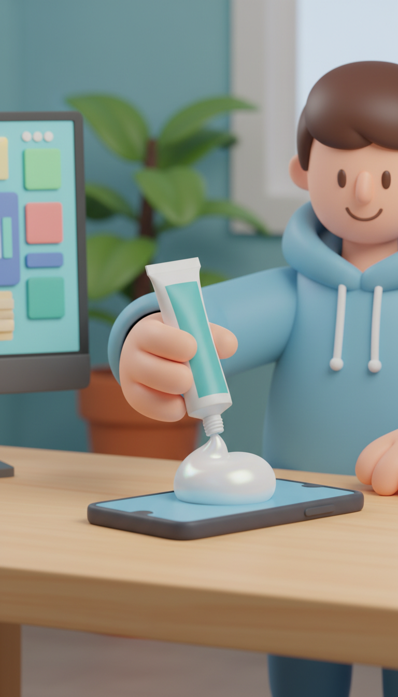
Create a single strong frame for a short-form tech video. A person is about to clean a smartphone screen with toothpaste on a desk in a modern home office. The phone, the toothpaste smear, and the hand must be clearly visible. One main subject, no text, no logos, no watermark, mobile-first readability, high clarity, dramatic but believable proof visual. Style preset: Cartoon 3D. Every shot must read as a premium stylized 3d cartoon frame with rounded forms, readable props, one clear action, and clean family-friendly staging. single stylized 3d cartoon character when needed, rounded forms, simple expressive face, clean silhouette, readable hands and limbs, friendly body language stylized 3d cartoon render, soft volumetric lighting, rounded shapes, clean materials, vibrant but controlled palette, family-friendly premium animation look, high readability, no text, no logos consistent visual identity across all scenes, same stylized 3d cartoon world, same rounded modeling language, same material treatment, same soft volumetric lighting, same polished animation-film composition one clear focal subject, one simple action, readable props, bold silhouette, clean layout, no text stylized 3d environment with simple readable props and soft depth keep backgrounds supportive, clean and colorful without becoming noisy no readable text, no logos, no watermark Lighting: soft volumetric 3d lighting with clean subject separation. Keep the same scene intent across styles so only the visual language changes.
urban_sketching
Traço solto de caderno urbano, com aquarela leve, observação do cotidiano e energia manual.
Abrir imagem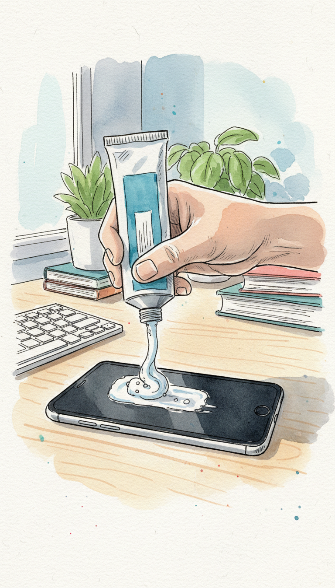
Create a single strong frame for a short-form tech video. A person is about to clean a smartphone screen with toothpaste on a desk in a modern home office. The phone, the toothpaste smear, and the hand must be clearly visible. One main subject, no text, no logos, no watermark, mobile-first readability, high clarity, dramatic but believable proof visual. Style preset: Urban Sketching. Every shot must read as an urban sketchbook illustration with lively ink lines, light watercolor wash, observational rhythm, and one clear focal idea. single hand-drawn sketchbook human when needed, expressive posture, readable gesture, loose confident linework, natural proportions urban sketchbook illustration, ink line drawing with light watercolor wash, observational drawing feel, travel journal energy, handmade imperfections, elegant composition, no text, no logos consistent visual identity across all scenes, same urban sketchbook line quality, same watercolor wash treatment, same hand-drawn rhythm, same observational composition language one clear subject, observational sketchbook feel, readable props, open composition, no text paper-like light background with visible sketchbook or watercolor feel supporting elements should look hand-drawn and loosely observed, not rigid vector icons no readable text, no logos, no watermark Lighting: soft natural daylight translated into ink and watercolor washes. Keep the same scene intent across styles so only the visual language changes.
ink
Ilustração forte em tinta, contraste alto e leitura imediata, com energia gráfica mais madura.
Abrir imagem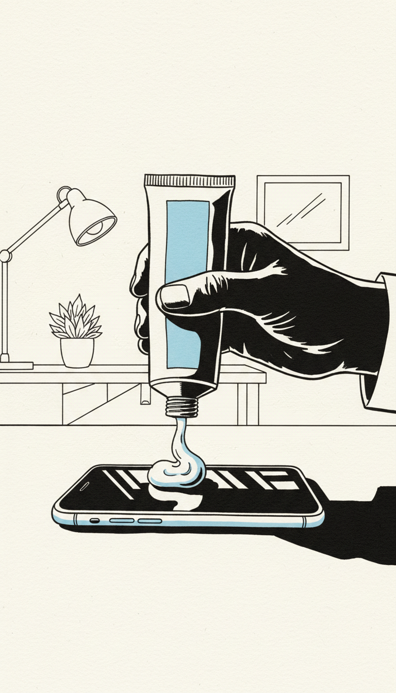
Create a single strong frame for a short-form tech video. A person is about to clean a smartphone screen with toothpaste on a desk in a modern home office. The phone, the toothpaste smear, and the hand must be clearly visible. One main subject, no text, no logos, no watermark, mobile-first readability, high clarity, dramatic but believable proof visual. Style preset: Ink. Every shot must read immediately at thumbnail size as a clean editorial ink illustration with one focal subject, one clear action, strong contrast, and generous negative space. single ink-drawn human figure when needed, clean human proportions, bold solid silhouette, minimal facial detail, confident continuous outlines, readable hands and limbs editorial ink illustration, crisp black brushwork, strong contrast, graphic shadow masses, clean paper background, controlled negative space, subtle accent color only when useful, no text, no logos consistent visual identity across all scenes, same ink weight, same contrast ratio, same paper-and-ink treatment, same editorial composition logic one dominant subject performing one clear action, strong figure-ground separation, readable silhouette, restrained props, uncluttered layout, no text, no fake UI light paper or off-white neutral background with open negative space and crisp ink contrast supporting elements should stay simplified as bold ink shapes or economical brush marks paper texture should stay subtle and never compete with the main subject Lighting: translate lighting into flat ink shadow masses and clean negative space instead of realistic shading. Keep the same scene intent across styles so only the visual language changes.
editorial_line_green
Line art preto e branco com acentos verdes sutis, cara de editorial moderno e ambiente detalhado.
Abrir imagem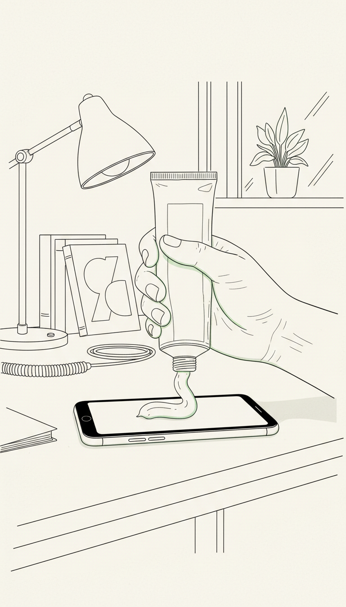
Create a single strong frame for a short-form tech video. A person is about to clean a smartphone screen with toothpaste on a desk in a modern home office. The phone, the toothpaste smear, and the hand must be clearly visible. One main subject, no text, no logos, no watermark, mobile-first readability, high clarity, dramatic but believable proof visual. Style preset: Editorial Line Green. Every shot must read as a black-and-white editorial line art illustration with subtle green accents, crisp pen drawing, detailed lived-in environments, and immediate mobile readability. single editorial line art human when needed, clean black contour drawing, readable posture, natural proportions, minimal facial detail, clear silhouette black and white editorial line art illustration with subtle green accents, refined pen drawing, modern magazine look, crisp contour lines, controlled detail density, premium monochrome composition, no text, no logos consistent visual identity across all scenes, same black ink line quality, same monochrome drawing language, same subtle green accent treatment, same editorial composition logic, same detailed but clean environmental storytelling one clear focal subject, one readable action, organized environment detail, clean frame hierarchy, no text light paper or clean off-white background with black line work and restrained green highlights only where useful supporting props should be drawn as detailed line art objects with clear hierarchy and mobile readability practical environment detail should enrich the scene through furniture, books, lamps, shelves, cables, tools, and room structure without dominating the focal subject required notes, clocks, calendars, papers, or watch faces should read as abstract graphic shapes rather than readable content Lighting: clean editorial lighting translated through line weight, negative space, and subtle green accents. Keep the same scene intent across styles so only the visual language changes.
time_split_bold
Objeto dominante, comparação antigo vs moderno e composição forte para retenção em mobile.
Abrir imagem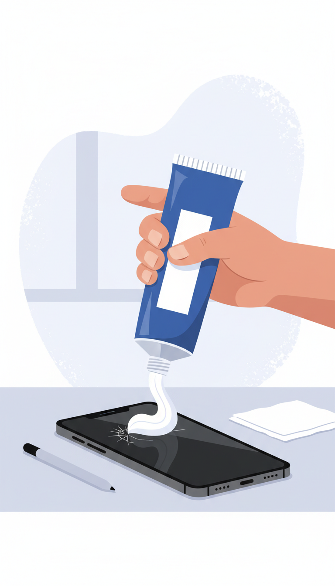
Create a single strong frame for a short-form tech video. A person is about to clean a smartphone screen with toothpaste on a desk in a modern home office. The phone, the toothpaste smear, and the hand must be clearly visible. One main subject, no text, no logos, no watermark, mobile-first readability, high clarity, dramatic but believable proof visual. Style preset: Time Split Bold. Every shot must be built around one dominant hero object and one obvious contrast between past and present. Keep the frame bold, simple, and instantly readable on mobile. single stylized editorial human figure when needed, clean human proportions, simple face, clear silhouette, natural posture, readable hands and limbs bold editorial comparison illustration with one dominant hero object, clear past-versus-present contrast, high-contrast shapes, controlled accent colors, strong negative space, crisp mobile-first composition, no text, no logos consistent visual identity across all scenes, same comparison logic, same hero-object dominance, same high-contrast editorial framing, same short-form visual rhythm one hero object per scene, one clear comparison beat, one immediately readable action, minimal supporting props, strong mobile readability, no fake UI clean light or lightly textured background with open negative space and minimal environmental noise supporting props should reinforce the past-versus-present contrast and stay secondary to the hero object required interfaces, labels, maps, or watch faces should read as abstract graphic shapes rather than detailed readable content Lighting: clean high-contrast editorial lighting with crisp object edges, simple separation, and strong figure-ground read. Keep the same scene intent across styles so only the visual language changes.
punk
Energia punk editorial, colagem agressiva, contraste bruto e composição de poster de rua.
Abrir imagem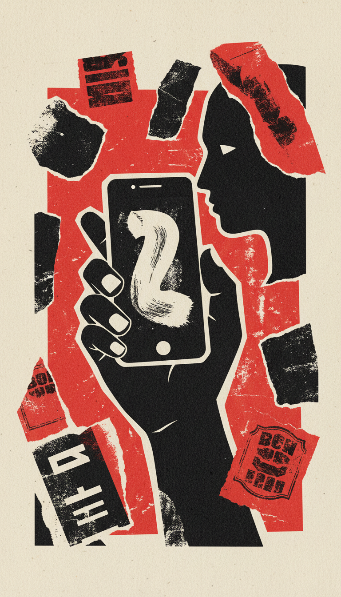
Create a single strong frame for a short-form tech video. A person is about to clean a smartphone screen with toothpaste on a desk in a modern home office. The phone, the toothpaste smear, and the hand must be clearly visible. One main subject, no text, no logos, no watermark, mobile-first readability, high clarity, dramatic but believable proof visual. Style preset: Punk Poster. Every shot must read like a rebellious street poster: one dominant subject, one immediate visual hit, raw layered composition, instant readability on mobile, and no filler. single punk editorial human figure when needed, clean human proportions, raw silhouette, simple face, strong posture, readable hands and limbs punk editorial poster illustration, raw collage energy, torn-paper layers, rough ink texture, bold black shapes, dirty off-white paper, sharp red accents, rebellious street-poster composition, high contrast, no text, no logos consistent visual identity across all scenes, same punk poster language, same raw collage rhythm, same dirty paper texture, same red-black-off-white palette, same aggressive short-form composition one dominant hero subject, one clear visual hit, poster-like impact, minimal filler, bold mobile readability, no text dirty off-white paper or wall-poster background with torn-edge collage feeling and bold negative space supporting elements should feel pasted, layered, or stamped, but stay secondary to the main subject required screens, papers, labels, or maps should read as abstract graphic shapes rather than readable content Lighting: graphic poster contrast with rough print texture and hard subject separation. Keep the same scene intent across styles so only the visual language changes.
Prompt corrigido do caso GPS: Create a clean editorial ink illustration for a vertical 9:16 short video. Show one driver stuck in heavy traffic inside a car, frustrated, checking a wristwatch with one hand while the other hand remains naturally placed near the steering wheel. Show a low-fuel gauge on the dashboard. Keep exactly one human figure, natural human proportions, only two arms and two hands, no extra limbs, no duplicate watches. This is not a macro hardware shot. Use a readable medium-wide in-car composition, not a device close-up. No text, no logos, no watermark, no fake UI.
Essa seção compara anatomia, aderência ao enquadramento e limpeza visual com o mesmo prompt. Os valores abaixo são referências de custo por imagem no Vertex AI.
imagen-4.0-fast-generate-001
Mesmo prompt do caso GPS, sem trocar o texto entre modelos. Serve para ver aderência, composição e limpeza real.
Abrir imagem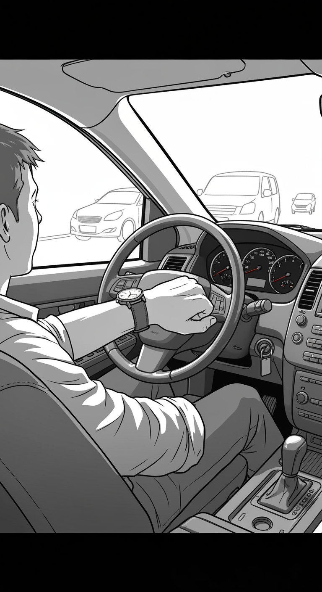
Create a clean editorial ink illustration for a vertical 9:16 short video. Show one driver stuck in heavy traffic inside a car, frustrated, checking a wristwatch with one hand while the other hand remains naturally placed near the steering wheel. Show a low-fuel gauge on the dashboard. Keep exactly one human figure, natural human proportions, only two arms and two hands, no extra limbs, no duplicate watches. This is not a macro hardware shot. Use a readable medium-wide in-car composition, not a device close-up. No text, no logos, no watermark, no fake UI.
gemini-2.5-flash-image
Mesmo prompt do caso GPS, sem trocar o texto entre modelos. Serve para ver aderência, composição e limpeza real.
Abrir imagem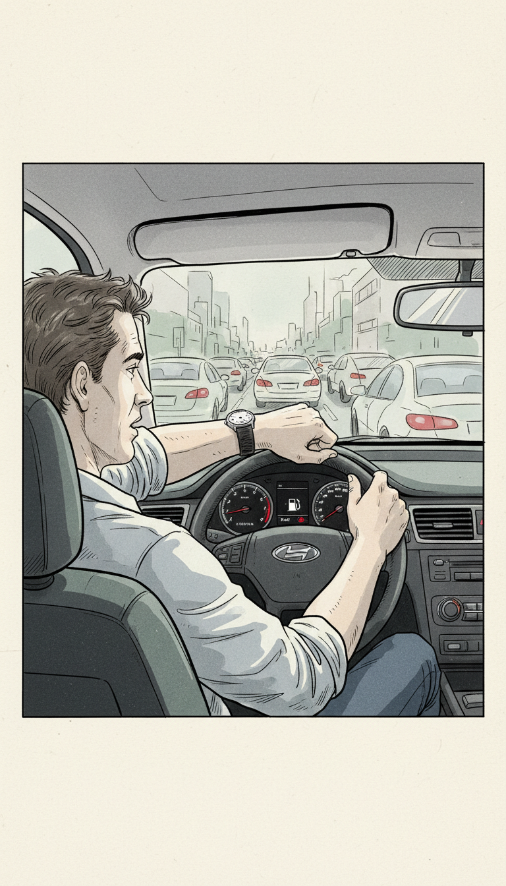
Create a clean editorial ink illustration for a vertical 9:16 short video. Show one driver stuck in heavy traffic inside a car, frustrated, checking a wristwatch with one hand while the other hand remains naturally placed near the steering wheel. Show a low-fuel gauge on the dashboard. Keep exactly one human figure, natural human proportions, only two arms and two hands, no extra limbs, no duplicate watches. This is not a macro hardware shot. Use a readable medium-wide in-car composition, not a device close-up. No text, no logos, no watermark, no fake UI.
imagen-4.0-generate-001
Mesmo prompt do caso GPS, sem trocar o texto entre modelos. Serve para ver aderência, composição e limpeza real.
Abrir imagem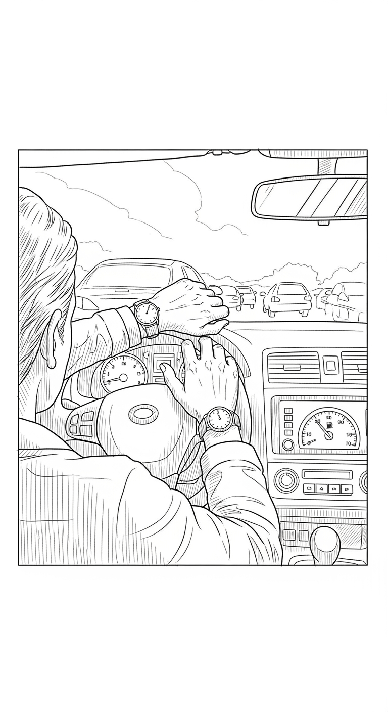
Create a clean editorial ink illustration for a vertical 9:16 short video. Show one driver stuck in heavy traffic inside a car, frustrated, checking a wristwatch with one hand while the other hand remains naturally placed near the steering wheel. Show a low-fuel gauge on the dashboard. Keep exactly one human figure, natural human proportions, only two arms and two hands, no extra limbs, no duplicate watches. This is not a macro hardware shot. Use a readable medium-wide in-car composition, not a device close-up. No text, no logos, no watermark, no fake UI.
imagen-4.0-ultra-generate-001
Mesmo prompt do caso GPS, sem trocar o texto entre modelos. Serve para ver aderência, composição e limpeza real.
Abrir imagem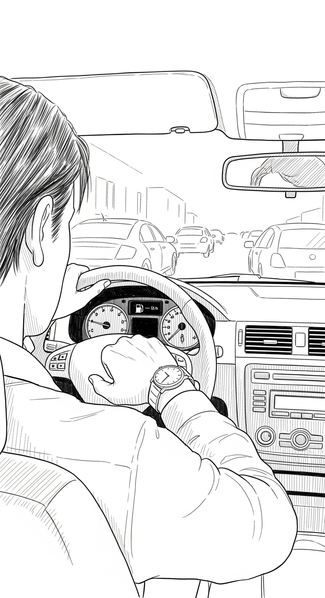
Create a clean editorial ink illustration for a vertical 9:16 short video. Show one driver stuck in heavy traffic inside a car, frustrated, checking a wristwatch with one hand while the other hand remains naturally placed near the steering wheel. Show a low-fuel gauge on the dashboard. Keep exactly one human figure, natural human proportions, only two arms and two hands, no extra limbs, no duplicate watches. This is not a macro hardware shot. Use a readable medium-wide in-car composition, not a device close-up. No text, no logos, no watermark, no fake UI.
gemini-3.1-flash-image-preview
Excelente para estilos artísticos (doodle, collage, ink). Segue prompts de estilo muito melhor que Imagen.
Abrir imagem
gemini-3-pro-image-preview
Modelo mais robusto para raciocínio visual avançado. Melhor fidelidade ao prompt e composição complexa.
Abrir imagem
gemini-3-pro-image-preview
Modelo mais robusto para raciocínio visual avançado. Melhor fidelidade ao prompt e composição complexa.
Preview em geração…
Vídeo de teste a correr agora